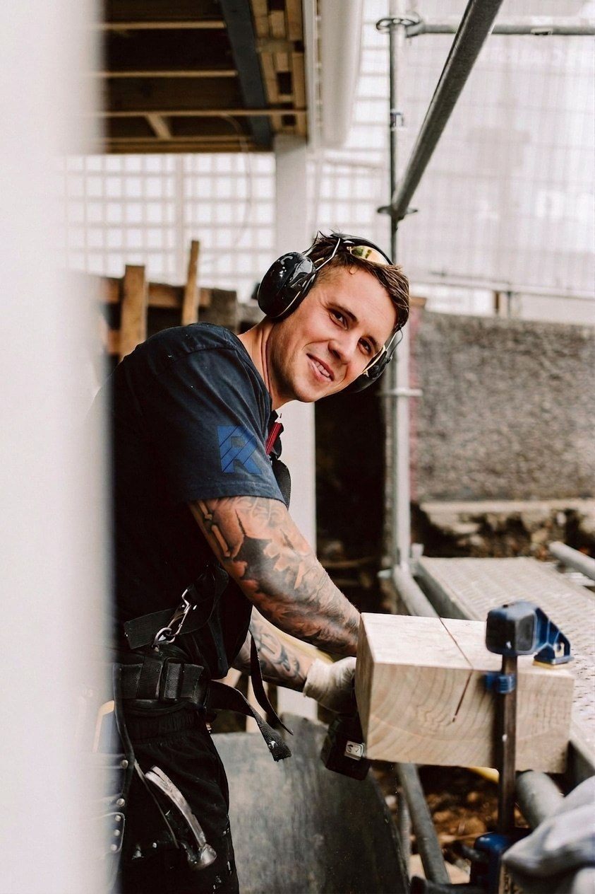
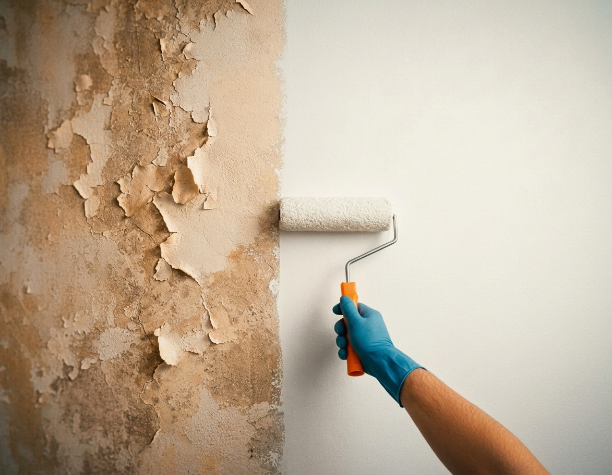
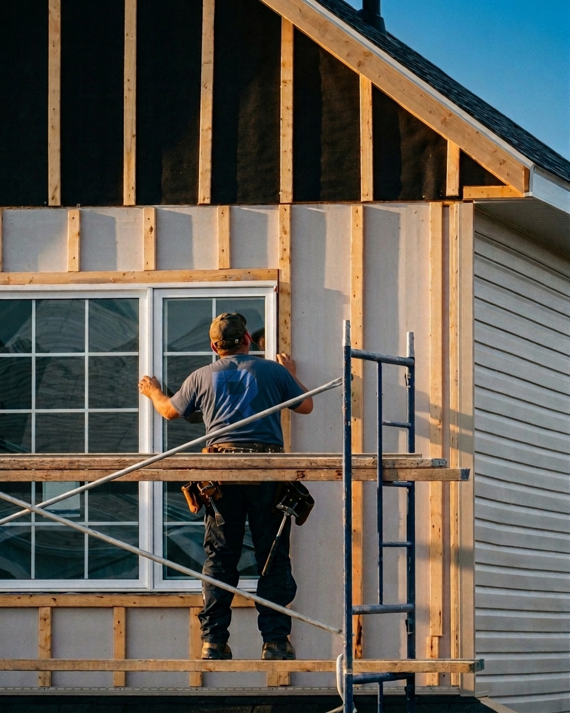
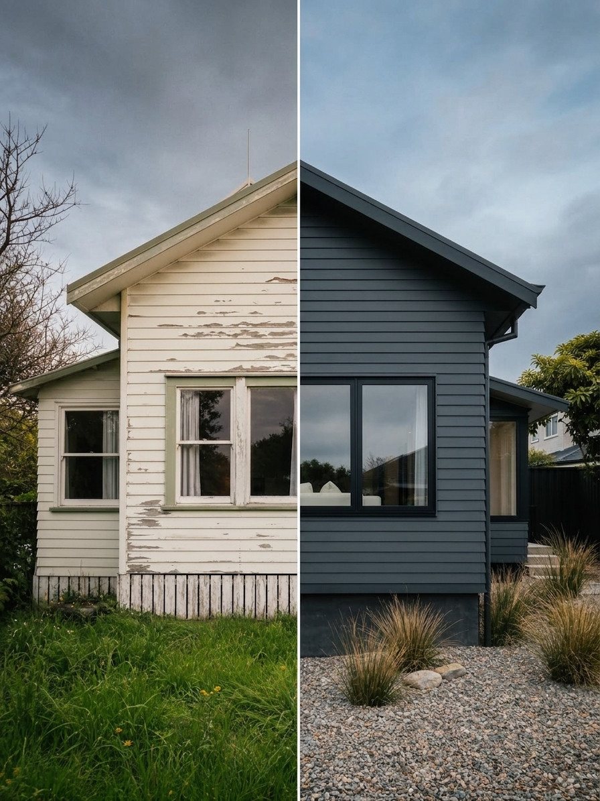

Команда профильных бригад на каждый этап работ
Демонтаж, черновая и чистовая отделка, электромонтаж, фасадные работы, подшивы, ремонт кровли, восстановление старых домов, бани и хозпостройки — закрываем весь цикл своими бригадами, не только то, что есть в списке услуг.
Один подрядчик ведёт объект от первого замера до сдачи — без субподрядчиков и передачи между разными командами. Смету фиксируем по этапам заранее, до начала работ.

Работаем на результат, а не для галочки
Отделка, электрика, фасады, восстановление старых домов и малые постройки — берём объект от первого замера до чистовой сдачи.
Все об отделке и электромонтаже
Отделка и электромонтаж под ключ
Внутренняя и внешняя отделка, монтаж инженерных систем и электрика — одна бригада ведёт объект от чернового этапа до чистовой сдачи.
Подробнее об услуге
Фасадные и монтажные работы
Утепление, отделка фасада, монтаж конструкций снаружи дома.
Подробнее об услуге
Восстановление домов
Ремонт фундамента, замена венцов сруба, кровля и фасад старого дома под ключ.
Подробнее об услугеНе увидели свою задачу?
Работаем по договору с фиксированной сметой по этапам, без субподрядчиков — опишите задачу, и мы скажем, что нужно сделать и сколько это будет стоить.
Описать задачу5 лет на рынке — и каждый объект всё ещё ведём лично
Мы не раздуваем штат и не берём в работу десятки объектов одновременно — каждый заказ ведём лично, от первого звонка до сдачи ключей. Никаких субподрядчиков-прокладок, на которых можно списать чужие ошибки: смету и сроки фиксируем сами и сами же за них отвечаем.
Что обычно спрашивают перед началом работ
Какие работы вы вообще берёте?
Практически любые в строительстве и ремонте — от мелкого ремонта до восстановления дома под ключ, включая бани, беседки и хозпостройки. Не беремся только за строительство крупных зданий с нуля.
Сколько стоит ремонт или восстановление дома?
Точную сумму называем после выезда и замера — под конкретный объект. Смету фиксируем по этапам, чтобы не было сюрпризов по ходу работ.
Можно продолжить ремонт, начатый другими подрядчиками?
Да. Оцениваем то, что уже сделано, и либо продолжаем, либо сначала исправляем то, что осталось от предыдущей бригады.
Дом в аварийном состоянии — его точно сносить?
Не всегда. Смотрим на месте, что из несущих конструкций и дерева можно сохранить — часто это дешевле и быстрее, чем строить с нуля.
В какие сроки укладываетесь?
Срок фиксируем в договоре по этапам — зависит от объёма работ и состояния объекта, называем после замера.
В каких районах вы работаете?
Кострома и Костромская область.
Что говорят клиенты
Реальные отзывы с Авито — каждая сделка подтверждена платформой.
Оставьте заявку — обсудим объект и посчитаем бюджет